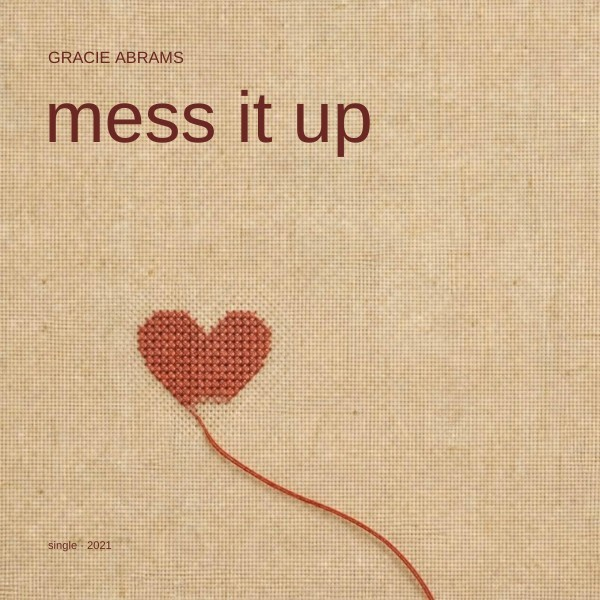
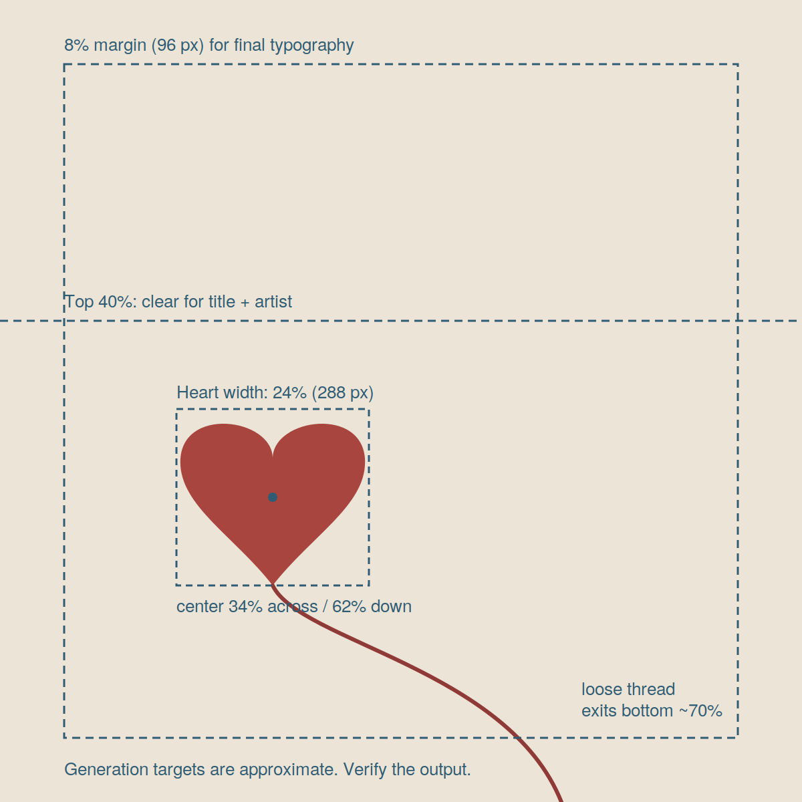
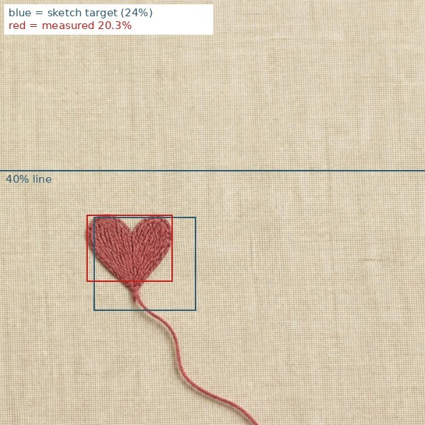
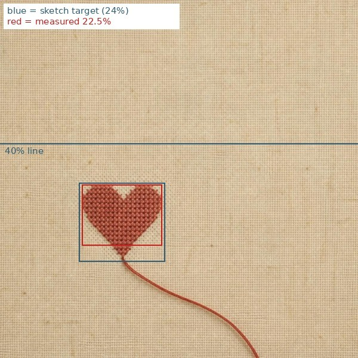
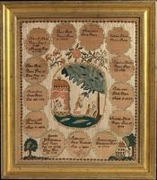
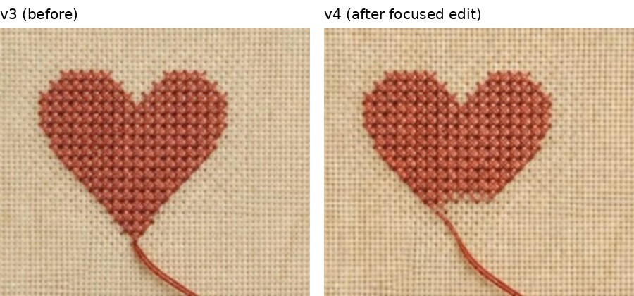
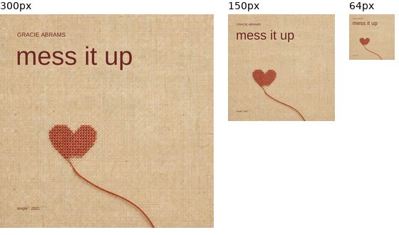

Imagery
One small cross-stitched heart and one loose thread. No other objects.

AI IMAGE-MAKING · ART DIRECTION
A visual process built from measurable composition, reference roles, focused correction, and editable typography.
Student concept cover—not official Gracie Abrams artwork.
THE CONCEPT
I read the song as the fear of ruining something good. The tension comes from self-sabotage rather than an actual breakup: tender, anxious, intimate, and still hopeful.
A cross-stitched heart suggests something made slowly and carefully. One pulled strand could unravel the whole object, turning the emotional idea into a single visible action.
01 · DEFINE
One small cross-stitched heart and one loose thread. No other objects.
Warm oatmeal linen, faded red silk, and deep red-brown typography.
The heart sits low and left while a large quiet area remains above.
Small artist, large lowercase title, and a quiet information line at the bottom.

THREE PRIORITIES
02–04 · GENERATE, COMPARE, CORRECT
No object, placement, scale, or material was defined. The cinematic bedroom missed the quiet handmade direction.

The heart, linen, loose thread, and empty upper area appeared, but the heart looked like a padded patch and the thread like thick yarn.

A sampler supplied one role only: faded silk cross-stitch and fine linen. The clean sketch continued to control composition.

REFERENCE ROLE
Use the small X-shaped stitches, faded silk floss, aged red, and fine linen. Exclude its letters, verses, circles, figures, border, frame, and overall layout.

05 · FINISH & CHECK
168 px, lowercase, #6B2723
38 px, capitals, #6B2723
26 px, bottom left
The 112 px margin equals 8% of the 1400 px canvas. At 64 px, the heart and title remain readable while supporting information recedes.

REFLECTION
Turning mood into measurable features made the largest difference. The sketch controlled the layout, while one carefully assigned reference solved the material problem.
The project moved from a generic person to one object. The final edit added meaning by showing the heart beginning to unravel.
Choose the typeface earlier, test a serif in context, and run each prompt twice to separate real improvement from a lucky generation.